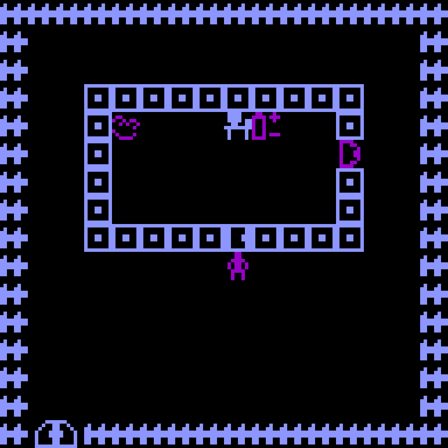
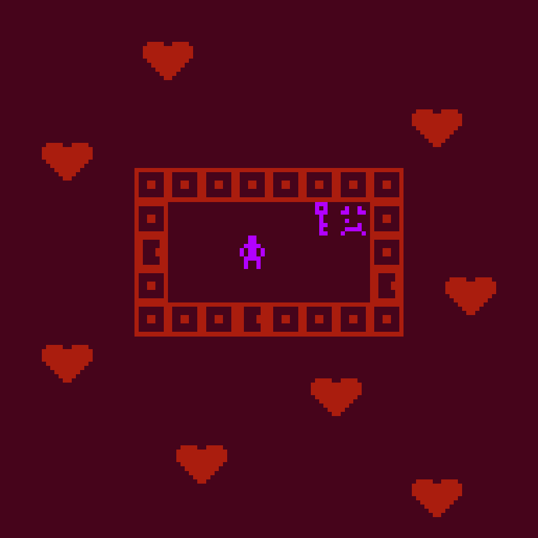
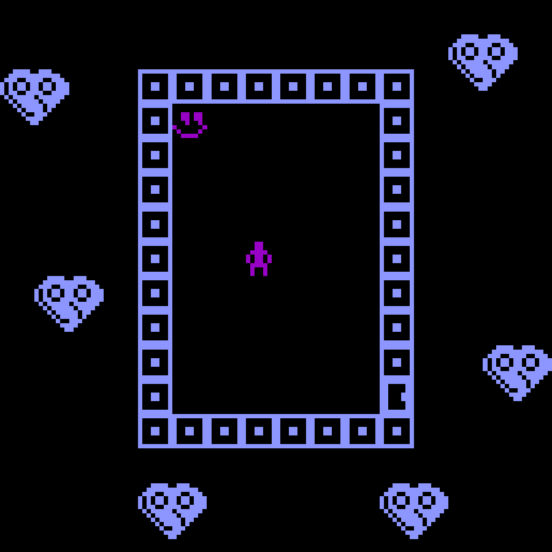
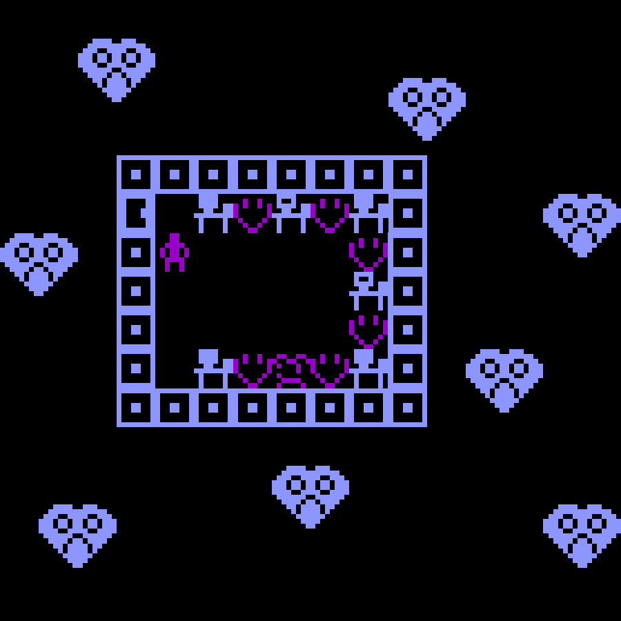
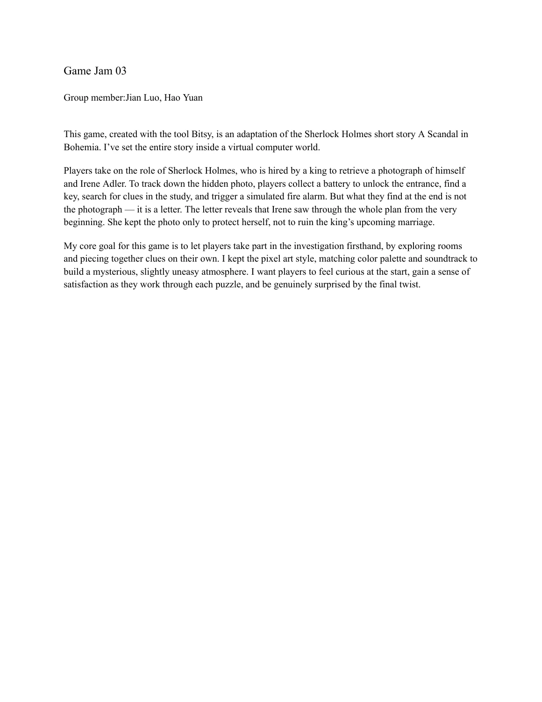

The commission
A king asks Holmes to recover a photograph of himself and Irene Adler, fearing it will threaten his coming marriage. Watson reminds the player that the client’s claim is not the same as evidence.
GAME JAM 03 · BITSY · SHERLOCK HOLMES
Follow the clues. Question the story.
Enter Irene Adler’s virtual house as Sherlock Holmes. A royal commission leads through four rooms, a simulated fire alarm, and a discovery that changes the meaning of the case.

01 / THE ADAPTATION
A king asks Holmes to recover a photograph of himself and Irene Adler, fearing it will threaten his coming marriage. Watson reminds the player that the client’s claim is not the same as evidence.
Arthur Conan Doyle’s short story becomes a small exploration game. The disguise, fire-alarm deduction and letter remain central, while batteries, terminals and a virtual archive translate the investigation into the existing digital setting.
02 / PLAY
Click the game to give it keyboard focus. Use arrow keys or WASD to move and advance dialogue. Walk into figures to speak or inspect; walk over items to collect them. On a touch screen, swipe to move. The game text is in English.
The prototype includes music. Switching the page language reloads the embedded game; use a separate tab to keep your progress.
03 / ARTIST’S STATEMENT
My goal is to let players take part in the investigation firsthand. Exploring rooms, collecting objects and connecting clues should make them feel that they are uncovering the case themselves, rather than only reading a retelling.
I kept the pixel artwork, color palette and soundtrack to create a mysterious, slightly uneasy atmosphere. I want curiosity to lead to satisfaction as the clues connect, then surprise at the final twist—and a question about whose version of the truth we have accepted.
04 / DEVELOPMENT NOTES
These notes document the revision of the existing Virtual travel prototype. The images below are room views captured from the revised game, not early sketches.
Retain the four-room layout, pixel drawings, animated figures, palettes and music. Reinterpret the spaces as Baker Street, Briony Lodge, Adler’s study and the archive.
Make the battery power the entrance. Require both the key and an observation from the study to unlock the archive. Add dialogue so each room offers a next step.
Connect the simulated alarm to the portrait cache, then the letter terminal. The ending becomes available after the hiding place is discovered. Wall collisions and return routes support this sequence.



05 / ORIGINAL DOCUMENT
The original one-page group document records the adaptation, gameplay and creative goals. Team: Jian Luo and Hao Yuan.

Team: Jian Luo and Hao Yuan. Adapted from A Scandal in Bohemia by Arthur Conan Doyle. The revision preserves the original prototype’s artwork and music; narrative adaptation and gameplay revisions were developed with AI assistance.
Download editable Bitsy sourceGAME JAM 03 · BITSY · SHERLOCK HOLMES
追寻线索，也质疑最先听到的故事。
扮演福尔摩斯，进入艾琳·艾德勒的虚拟住宅。一份王室委托将你带入四个房间；模拟火警与最后的发现，让案件有了不同的意义。
01 / THE ADAPTATION
国王担心自己与艾琳的合照影响即将到来的婚姻，委托福尔摩斯取回照片。华生提醒玩家：委托人的说法并不等于证据。
阿瑟·柯南·道尔的短篇被改编成一款小型探索游戏。乔装、火警推理和信件仍是核心桥段；电池、终端与虚拟档案室则让调查融入原有的数字空间。
02 / PLAY
先点击游戏画面，再使用方向键或 WASD 移动、推进对话。走向角色进行交谈或调查，走过物品即可收集。触屏设备可滑动移动。游戏内文本为英文。
原型包含音乐。切换页面语言会重新载入内嵌游戏；如需保留当前进度，请在独立标签页游玩。
03 / ARTIST’S STATEMENT
我的目标是让玩家亲自参与调查。通过探索房间、收集道具和联系线索，玩家能够感到自己正在发现案件的真相，而不只是阅读一段复述。
我保留了像素画、配色和音乐，希望营造神秘而略显不安的氛围。玩家先感到好奇，在串联线索时获得成就感，再因结局的反转感到意外，并思考自己一直相信的是谁的说法。
04 / DEVELOPMENT NOTES
以下内容记录了现有《Virtual travel》原型的修改过程。下方图片来自修改后游戏的房间画面，并非早期草图。
保留四个房间的主要布局、像素图案、角色动画、配色和音乐，将空间重新解释为贝克街、住宅大厅、书房与档案室。
让电池启动入口；进入档案室前，玩家必须同时取得钥匙与书房线索。补充对话，让每个房间都能提供下一步的方向。
将模拟火警、画像藏处与读信终端连接起来，发现藏处后才能触发结局；同时调整墙壁碰撞与返回路线，让调查顺序成立。
05 / ORIGINAL DOCUMENT
原始一页小组文档记录了改编内容、玩法与创作目标。组员：Jian Luo、Hao Yuan。
小组成员：Jian Luo、Hao Yuan。改编自阿瑟·柯南·道尔的《波希米亚丑闻》。修改保留原型的美术与音乐，剧情改编和玩法修改使用了 AI 辅助。
下载可编辑 Bitsy 源文件